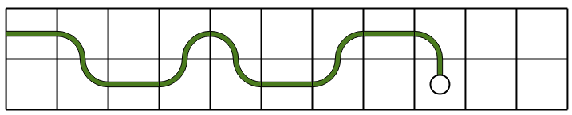
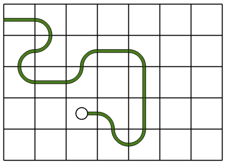
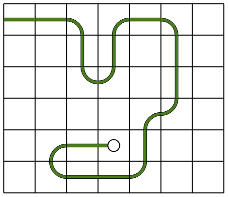

Every move through the grid can be described by a digit. So the path of the white circle can be encoded to a sequence of digits.
Guess the right path to make "Your Code" the same as the "Target Code".
Drag the white circle or click on the next cell to draw your path.
The path is encoded into a sequence of numbers as follows :
For example, the sequence 0 1 0 0 1 0 1 corresponds to displacements right, down, right, right, up, right, down.
The full path corresponding to the objective sequence is :
The path is encoded into a sequence of numbers as follows :
For example, the sequence 1 2 3 2 1 1 0 corresponds to displacements right, down, left, down, right, right, up.
The full path corresponding to the objective sequence is :
The path is encoded into a sequence of numbers as follows :
For example, the sequence 0 0 1 0 2 2 0 corresponds to displacements advance, advance, right, advance, left, left, advance.
The full path corresponding to the objective sequence is :
